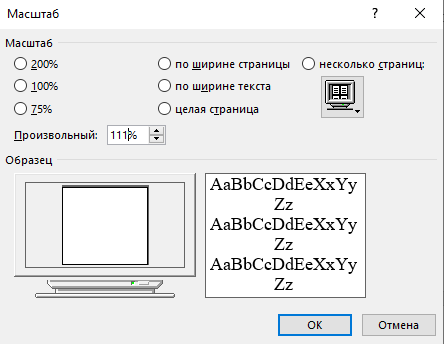

Задание 2. Изменения вида экрана.
Порядок работы
1. Установите режим Разметка страницы – (меню Вид/Разметка страницы). Обратите внимание, как изменился вид экрана.
2. Для выбора оптимального размера документа на экране установите в порядке указанной очередности ниже перечисленные виды масштабов (Вид/Масштаб) (рис. 5). Обратите внимание, как изменяется вид экрана:
Рисунок 5 – Установка масштаба
Оставьте для работы с документом последний установленный вид масштаба «По ширине».